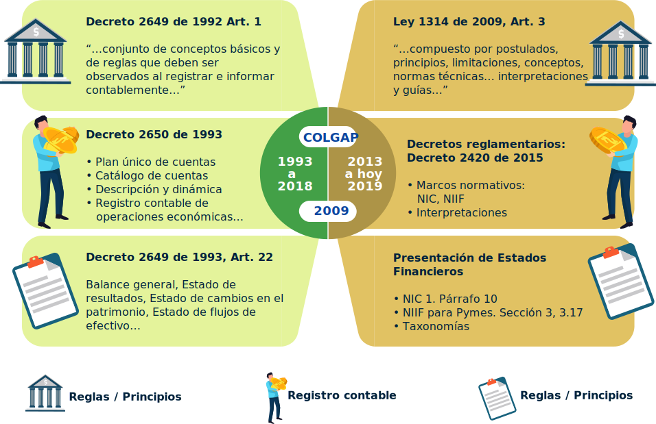

Introducción
Con la implementación de las normas de información financiera según NIIF para microempresas es necesario esforzarse en asumir el reto del cambio de pasar de lo tradicional a implementar las normas emitidas, para este caso, según NIIF para microempresas.
Aunque es necesario generar una técnica de trabajo, el microempresario se dará cuenta que no es un reto difícil de asumir, sino una oportunidad de formalizar el proceso contable de manera que evidencie el verdadero estado financiero de la organización.
Esto es verificable, además de todos los componentes que posee, por los procedimientos establecidos para la clasificación y registro de la información contable, la cual debe cumplir unos criterios, debe ser sometida a una evaluación que permite reconocerla y medirla para luego ser incluida en una partida que se ajuste a las características del hecho económico.
1. Aplicación por primera vez de la norma de información financiera para microempresas
Según el Decreto 2706 de 2012 el reconocimiento es el proceso de incorporar en los estados financieros una partida que cumple con la definición de activo, pasivo, ingreso o gasto y que cumpla los siguientes criterios:
-
Es probable que cualquier beneficio económico futuro asociado con la partida entre o salga de la microempresa.
-
La partida tiene un costo o valor que puede ser medido con fiabilidad.
La falta de reconocimiento en los estados financieros de una partida que satisface esos criterios, no se rectifica mediante la revelación de las políticas contables seguidas, ni tampoco a través de notas u otro material explicativo.

Adopción por primera Vez
Una microempresa que adopte por primera vez la Norma de Información Financiera para microempresas, aplicará lo contenido en el Decreto 2706 de 2012 en la preparación de sus primeros estados financieros, los cuales deben cumplir con los requisitos establecidos en la mencionada norma.
Los primeros estados financieros de una microempresa, conforme a esta norma, son los estados financieros anuales en los cuales la microempresa hace una declaración inicial, explícita y sin reservas del cumplimiento de la mencionada norma. Los estados financieros preparados de acuerdo con esta norma, son los primeros estados financieros de una microempresa si ella por ejemplo:

No presentó estados financieros en los periodos anteriores.

Presentó sus estados financieros más recientes según el marco contable anterior, que no son coherentes con todos los aspectos de esta norma.

Presentó sus estados financieros más recientes de conformidad con NIIF o NIIF para pymes.
Los estados financieros o conjunto completo de estados financieros para la microempresa son:

Estado de situación financiera.

Estado de resultados.

Notas a los estados financieros como lo especifica el párrafo 3.8 de esta norma.
Una microempresa revelará información comparativa, respecto del periodo comparable anterior, para todos los montos presentados en los estados financieros del periodo corriente, así como información financiera específica. Adicionalmente, incluirá información comparativa para la información de tipo descriptivo y narrativo, cuando esto sea relevante para la comprensión de los estados financieros del periodo corriente.
Una microempresa puede presentar información comparativa con respecto a más de un periodo anterior comparable. La fecha de transición a la norma de información financiera para microempresas de una microempresa es la fecha en la que prepara su estado de situación financiera de apertura a esta norma.
2. Procedimientos para preparar los estados financieros en la fecha de transición
Una microempresa deberá, en su estado de situación financiera de apertura en la fecha de transición a la norma de información financiera para las microempresas:

Reconocer todos los activos y pasivos de acuerdo con lo señalado en esta norma.
No reconocer partidas como activos y pasivos si esta norma no lo permite.
Reclasificar las partidas que reconoció, según su marco contable anterior, como activo, pasivo o componente de patrimonio, pero que son de un tipo diferente de acuerdo con esta norma.
Aplicar esta norma al medir todos los activos y pasivos reconocidos.
Las políticas contables que una microempresa utilice en su estado de situación financiera, de apertura conforme a esta norma pueden diferir de las que aplicaba en la misma fecha utilizando su sistema contable anterior. Los ajustes resultantes surgen de transacciones, otros sucesos y condiciones anteriores a la fecha de transición a esta norma. Por lo tanto, una microempresa reconocerá estos ajustes, en la fecha de transición a esta norma, directamente en la cuenta de resultados acumulados.

Revaluación como costo atribuido

Una microempresa que aplica por primera vez esta norma, podrá utilizar como costo de las propiedades, planta y equipo en el estado de situación financiera de apertura, cualquiera de los siguientes criterios:
Un avalúo técnico efectuado en la fecha de transición.
El saldo que se trae de los registros contables anteriores, siempre y cuando cumplan con los criterios de reconocimiento de esta norma.
En lo sucesivo, este valor será la base para aplicar las disposiciones contenidas en la presente norma.
3. Revelación de la transición a la norma de información financiera para las microempresas
Una microempresa, explicará en una nota a los estados financieros, como ha efectuado la transición desde el marco contable anterior a esta norma.
Conciliaciones
Para cumplir con lo establecido en el párrafo anterior, los primeros estados financieros preparados conforme a esta norma son:

Una descripción de la naturaleza de cada cambio en la política contable.
Conciliación de su patrimonio determinado de acuerdo con su marco contable anterior y con el patrimonio determinado de acuerdo de esta norma según las siguientes fechas:
-
La fecha de transición de esta norma.
-
El final del último periodo presentado en los estados financieros anuales más recientes de la microempresa determinado de acuerdo con su marco contable anterior.
Una conciliación del resultado de sus operaciones, determinado de acuerdo con su marco contable anterior, para el último periodo incluido en los estados financieros anuales más recientes de la microempresa, con el resultado determinado de acuerdo con esta norma para ese mismo periodo.

Si una microempresa no presentó estados financieros en periodos anteriores, revelará este hecho en sus primeros estados financieros preparados conforme a esta norma.
4. Validar el registro de la información contable según la norma de información financiera para microempresas
La validación del registro de la información contable está relacionada con los procedimientos de reconocimiento, medición, registros, clasificación de las transacciones económicas en sus partidas correspondientes cumpliendo con el criterio de las características cualitativas de la información financiera y su explicación o justificación en las notas a los estados financieros.
Todo esto ligado al criterio de la buena fe pública que da el contador público acerca de la información financiera presentada, a los procesos y procedimientos establecidos en la organización sobre el sistema de control interno y proceso contable; así como el cumplimiento en lo expuesto en la Ley 1314 de 2009 y sus decretos reglamentarios que son explícitos en la veracidad de esta información.
Comparación normas NIIF antes y luego de su implementación
Gráfico: antes y después de la aplicación de NIIF en Colombia
5. Emitir los reportes y los estados financieros según la norma de información financiera
Emitir reportes y/o estados financieros constituye una representación estructurada de la situación financiera y rendimiento financiero de una entidad. El objetivo de los estados financieros es suministrar información acerca de la situación financiera, del rendimiento financiero y de los flujos de efectivo de una entidad, que sea útil a una amplia variedad de usuarios a la hora de tomar sus decisiones económicas. Los estados financieros también muestran los resultados de la gestión realizada por los administradores con los recursos que les han sido confiados.
Actividad didáctica

¡Pon a prueba tu conocimiento!
La siguiente actividad tiene como propósito validar los conocimientos adquiridos sobre Implementación de las normas de información financiera NIIF para microempresas
IniciarGlosario
Activo corriente:es el efectivo equivalente al efectivo al menos que este restringido y no pueda ser intercambiado, ni utilizado.
Acumulación o devengo:describe efectos de las transacciones y otros sucesos sobre los recursos económicos.
Costo atribuido:es un importe que se puede utilizar como una exención voluntariamente elegida por parte de la entidad en adopción por primera vez en partidas pertenecientes a propiedad, planta y equipo; propiedades de inversión (si se escoge la aplicación del modelo del costo), y activos intangibles (si cumplen con los criterios de reconocimiento). El costo atribuido no se puede usar en la medición de otros activos o pasivos.
Costo histórico:los activos se registran por el importe de efectivo y otras partidas pagadas o por el valor razonable de la contrapartida entregada a cambio en el momento de la adquisición.
Costos corriente:los activos se registran por el importe de efectivo y otras partidas equivalentes que debería pagarse si se adquiriese en la actualidad el mismo activo o su equivalente.
Valor realizable:también llamado de liquidación. Los activos se llevan contablemente por el importe de efectivo y otras partidas equivalentes al efectivo que podrían obtenerse, en el momento presente, por la venta no forzada de los mismos.
Valor presente:los activos se llevan contablemente al valor presente, descontando las entradas netas de efectivo que se espera genere la partida en el curso normal de operación.
XBRL:Lenguaje Estándar de Transferencia de Información.
Referencias bibliográficas
(Godoy, R. (2018). Adopción por primera vez a las niif-esfa : Plenas, pymes y microempresas. Retrieved from https://ebookcentral-proquest-com.bdigital.sena.edu.co
(MINCIT, 2012). Decreto 2706 de 2012. Consultado en https://niif.com.co/decreto-2706-2012/marco-tecnico-nif-grupo-3
Ramírez, (2017). NIIF para Microempresas. Normas de Información Financiera para Microempresas con ejercicios de aplicación. Universidad Libre. Bogotá y Cali. Grupo de Investigación, Gestión y Apoyo a Mipymes. Página web Universidad Libre de Colombia http://www.unilibre.edu.co/bogota/pdfs/2017/NIF-MICROEMPRESAS.pdf
Superintendencia de Sociedades. Guía general de aplicación por primera vez del marco técnico normativo de aplicación para microempresas. http://www.comunidadcontable.com/BancoMedios/Documentos%20PDF/guia%20implementaci%C3%B3n%20por%20primera%20vez%20microempresas%202.pdf